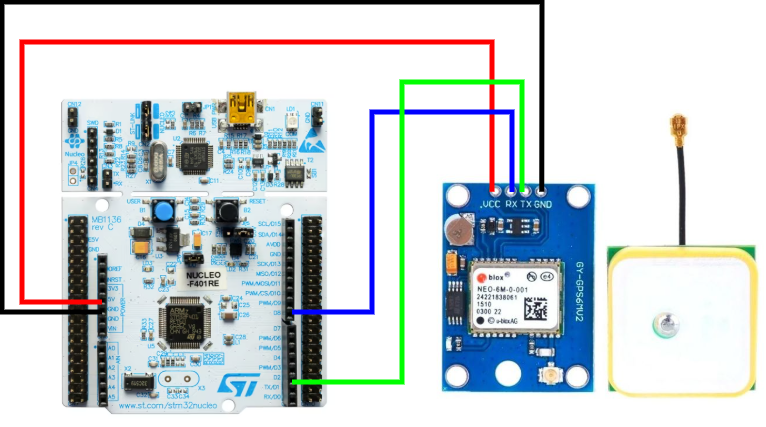

STM32F401RE – GPS UART Project
1. Objective
- Read GPS data using STM32 UART
- Display GPS NMEA data in Serial Monitor
- Interface GPS module with STM32
2. Modules Required
- STM32F401RE Board
- NEO-6M GPS Module
- Connecting Wires
- USB Cable
- PC with PuTTY
3. Schematic Diagram
4. CubeMX Configuration
- Enable USART2
- PA2 – TX
- PA3 – RX
- Baud Rate – 9600

5. Connections
- GPS TX → STM32 PA3 (RX)
- GPS RX → STM32 PA2 (TX)
- GPS VCC → 5V
- GPS GND → GND
6. Program Code
Main Code File: main.c
Program Code
Click below to view full code:
Open Full main.c Code
Full project code files available in: gps-project/code/ folder
7. Instructions (Using PuTTY)
- Connect GPS module to STM32 correctly
- Open project in STM32CubeIDE
- Enable USART2 in CubeMX
- Build and flash the code
- Connect STM32 to PC
- Open PuTTY software
- Select Serial mode
- Choose correct COM port
- Set baud rate 9600
- Click Open
- Observe GPS data on screen
8. Working
- GPS sends NMEA data continuously
- STM32 receives data via UART
- Data is transmitted to PC serial monitor
- User can view latitude and longitude
9. Points to Remember
- Use correct baud rate 9600
- Check TX/RX connections properly
- GPS needs outdoor signal
- Wait few minutes for satellite lock
- Use common ground
10. Output